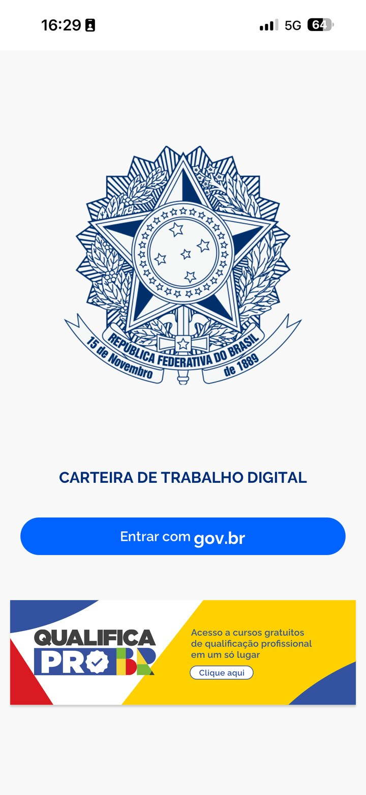
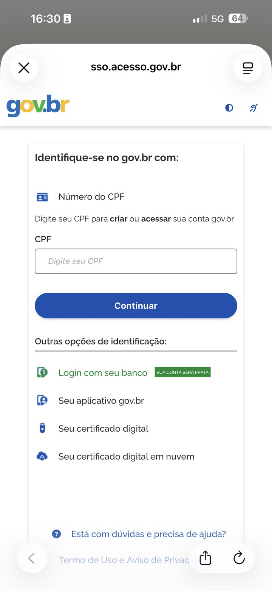
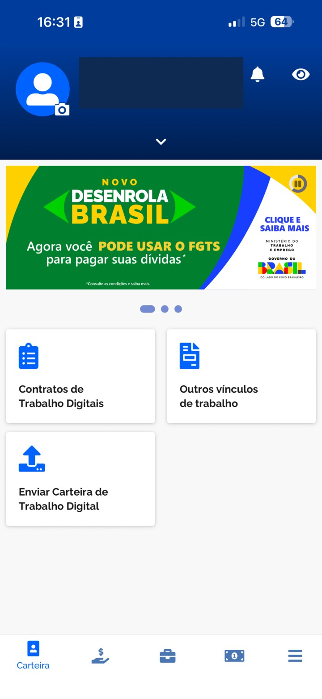
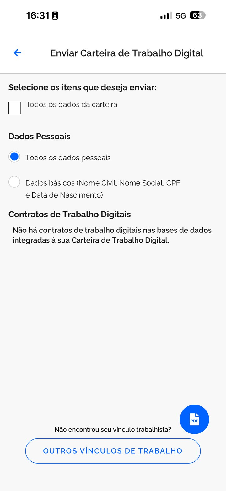
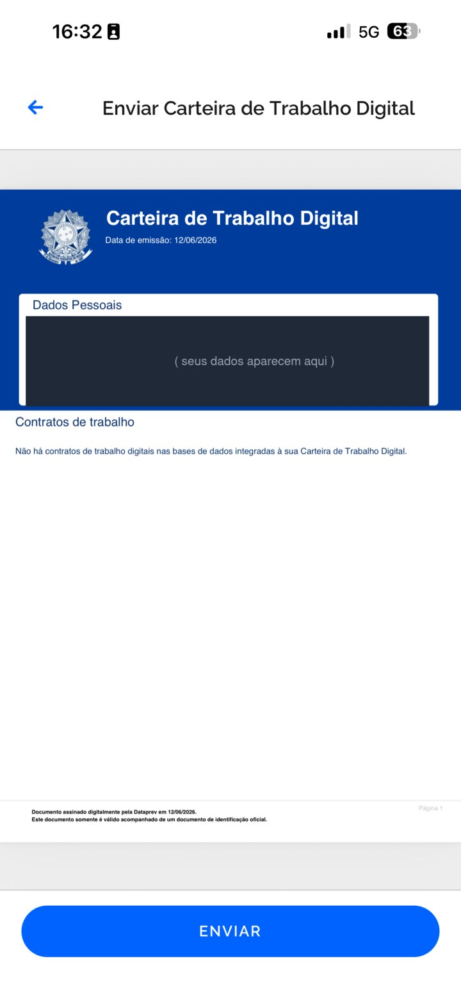
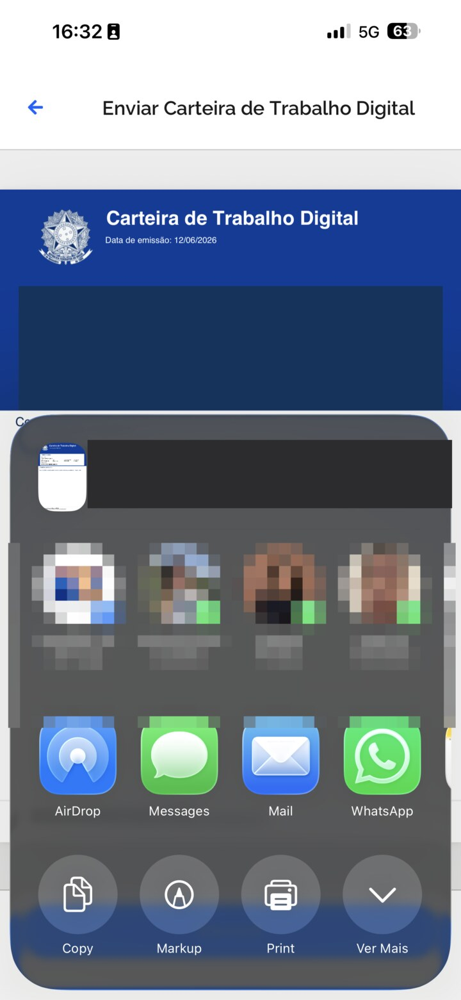

Como mandar sua Carteira de Trabalho em PDF
É a Carteira de Trabalho Digital, do Governo. Sai na hora, pelo celular, sem pagar nada. Siga os passos com calma — e se travar, é só chamar a gente no fim da página.
Baixe o app Carteira de Trabalho Digital
Abra a loja de aplicativos do seu celular (Play Store ou App Store) e procure por Carteira de Trabalho Digital. É o app do Governo — de graça, ícone azul com o brasão do Brasil. Toque em Instalar e depois em Abrir.
Já tem o app no celular? Pode pular pro passo 2.
Toque em Entrar com gov.br
Na primeira tela do app, toque no botão azul Entrar com gov.br.

Digite seu CPF e a senha do gov.br
1 Digite seu CPF e toque em 2 Continuar. Depois é só colocar a sua senha do gov.br — a mesma conta que se usa no Meu INSS e em outros serviços do Governo.

1 2Toque em Enviar Carteira de Trabalho Digital
Depois de entrar, procure o cartão escrito Enviar Carteira de Trabalho Digital e toque nele.

Marque "Todos os dados da carteira"
1 Toque no quadradinho Todos os dados da carteira. 2 Depois toque no botão azul redondo escrito PDF, no canto de baixo da tela.

1 2Toque em ENVIAR
O app mostra a sua carteira pronta. Desça a tela até o fim e toque no botão azul ENVIAR.

Guarde o PDF e anexe no formulário da vaga
Vai abrir um menu pra escolher o que fazer com o arquivo. Toque em Salvar (em alguns celulares aparece Salvar no celular ou Salvar em Arquivos).

Essa tela muda de um celular pro outro — o seu pode mostrar as opções de outro jeito.
Agora é só voltar no formulário da vaga, tocar no campo da Carteira de Trabalho (PDF) e escolher o arquivo que você salvou. Ele costuma aparecer em Recentes ou Downloads.
Deu algum problema?
Esqueci minha senha do gov.br
Na tela de entrada, toque em "Esqueci minha senha". Dá pra recuperar na hora, por SMS, e-mail ou pelo aplicativo do seu banco. Se travar, chama a gente no WhatsApp aqui embaixo.
Apareceu "Não há contratos de trabalho"
É assim mesmo pra quem ainda não teve registro em carteira — e tudo bem. Manda o PDF do jeito que está. Você não perde a vaga por isso.
Não quero instalar o app (ou o celular está sem espaço)
Dá pra fazer tudo pelo navegador, sem instalar nada: entre em servicos.mte.gov.br com a sua conta gov.br e gere o PDF por lá, do mesmo jeito.
Salvei o PDF mas não acho o arquivo
No campo de anexar do formulário, procure nas pastas Recentes ou Downloads. Se não achar, manda mensagem pra gente no WhatsApp que resolvemos juntos.
Travou em algum passo?
Ninguém fica pra trás. Chama a gente que resolvemos juntos, na hora.
💬 Chamar o RH no WhatsApp